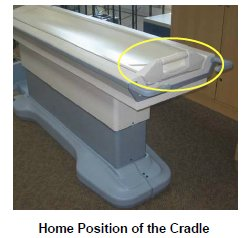
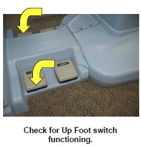
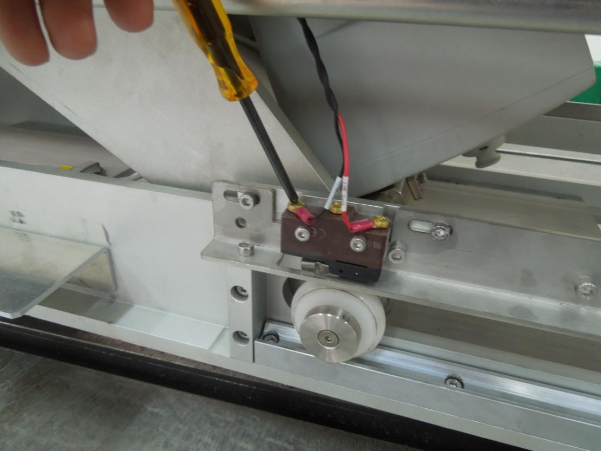
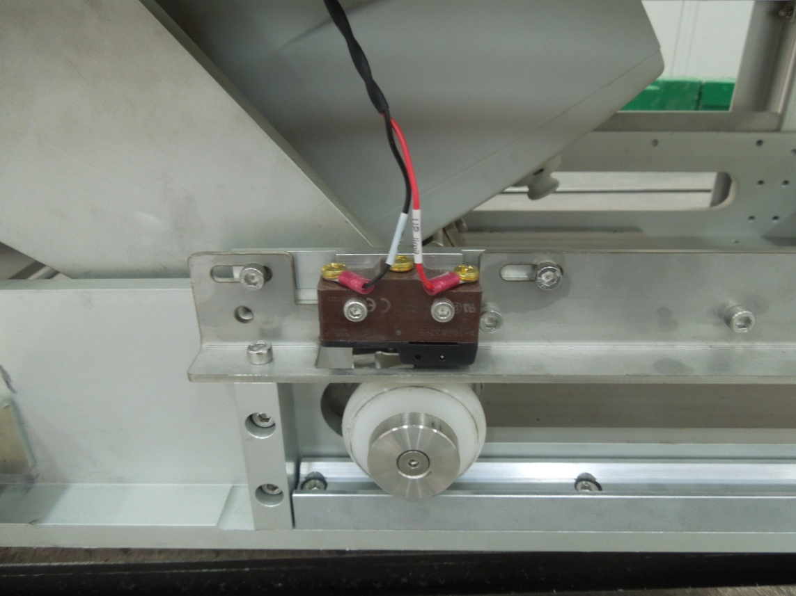
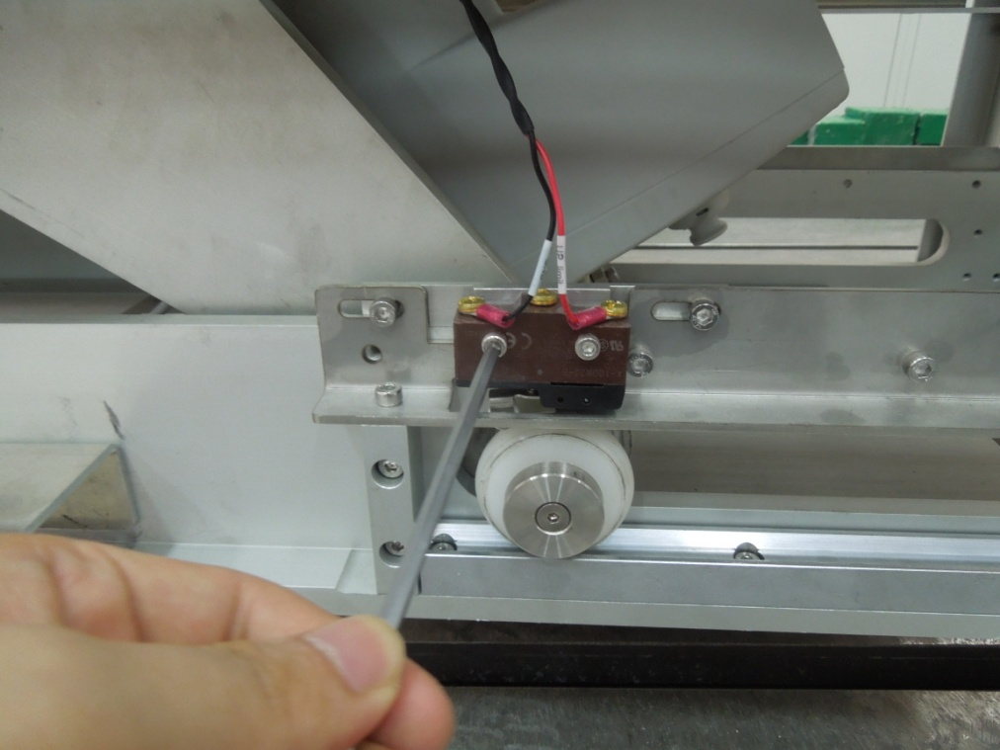
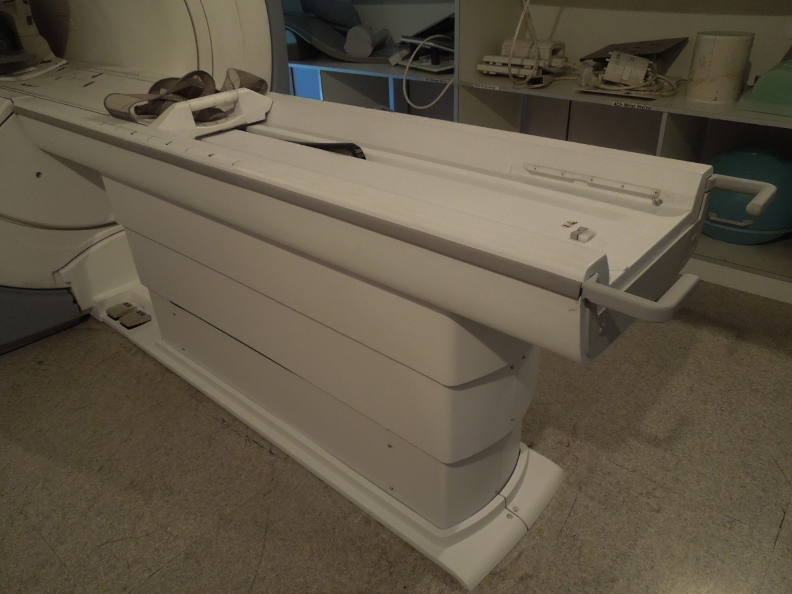
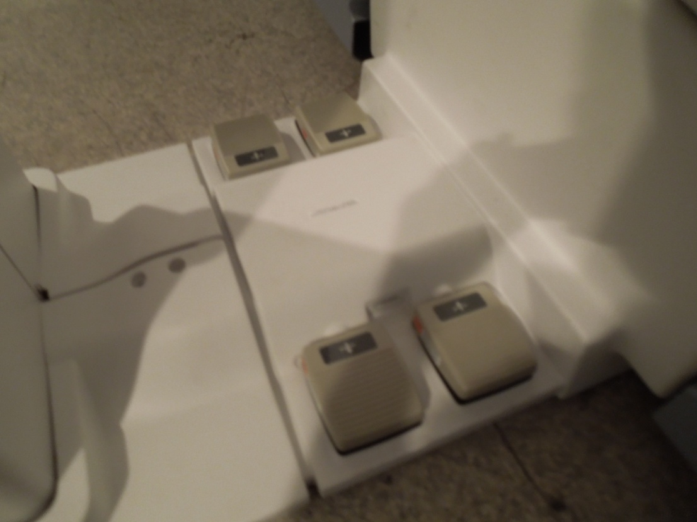
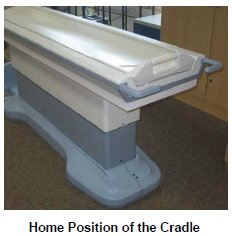
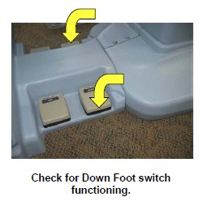

Low Height Fixed Table Troubleshooting Guide
This document provides a quick guide to identify problems, and the procedures to solve it. Here references have been made to specific sections of the installation manual and the service methods manual, the concerned FE has to refer to these sections and follow the detailed procedures for settings or replacements.
Below mentioned Table of Contents gives the list of general symptoms and the probable causes with recommended solution.
|
1 TABLE NOT MOVING UP WHEN UP FOOT SWITCH PRESSED
1.1 Possible Causes
-
Cradle not in-home position.
-
Up Foot switch not functioning.
-
Table might have reached Top most condition.
-
The home sensor not actuated by the Cradle.
-
Cable connections might have disconnected.
-
Up Limit switch have activated/failed.
-
Electrical Actuator Power supply cable Failure/Disconnected.
-
Control Board or Electrical Actuator failure
1.2 Checks and solution
-
Check whether cradle is in Home position. Refer Figure 1 for the home position.
Figure 1. Home Position

-
If Cradle is at home position, then check for both foot switch spring action by pressing the Foot switch. Refer to Figure 2. If foot switch is not working properly, replace the foot switch. Refer to FOOT SWITCH AND FOOT PEDAL CABLE.
Figure 2. Foot switch

-
If foot switch is functioning properly, then the table might have reached Top most condition. Press down foot switch; check whether Table is coming down. If Table is coming down, Press Up foot switch check whether table is going up.
-
If table is going up, then the Table Height adjustment needs to be adjusted. Refer to TOP HEIGHT ADJUSTMENT. If table is not moving Up, Check for Home sensor functioning. Refer to CRADLE HOME SENSOR CHECK.
-
If home sensor is functioning properly, then remove the Table FRP covers. Refer to Table FRP covers
-
Check for cable connections are properly connected. Refer to cable connection described in Fixed Table Installation.
-
If cable connections are connected properly, then remove the scissors cover of the Table, Refer to SCISSOR COVERS.
-
Check for the cable connection near the Up Limit switch as shown in theFigure 3 .
Figure 3. Up Limit switch

-
If cables are connected properly, then check for the UP Limit switch actuation. Refer toFigure 4 .
 warning
warning
Figure 4. UP Limit switch actuation

-
If the table limit switch is not functioning properly, then loosen the two screws holding the Limit switch replace the Limit switch with the new Limit switch.
-
Disconnect the Cables connected to the Limit Switch.
Figure 5. UP Limit switch
-
Remove the Screws connected to the Limit switch.
Figure 6. UP Limit switch

-
Fix the New Limit switch.
Figure 7. New Limit switch
-
Disconnect the Cables connected to the Limit Switch.
Figure 8. Limit Switch
-
-
Check whether cradle is in Home position. Refer toFigure 9for the home position.
Figure 9. Home position

-
If Cradle is at home position, then check for down foot switch spring action by pressing the Foot switch. Refer toFigure 10 If foot switch is not working properly, replace the foot switch. Refer to TABLE ELECTRICAL ACTUATOR.
Figure 10. Foot switch

2 TABLE NOT MOVING DOWN WHEN DOWN FOOT SWITCH PRESSED
2.1 Possible Causes
-
Cradle not in-home position.
-
Table might have reached down most condition.
-
The home sensor not actuated by the Cradle.
-
Cable connections might have disconnected.
-
Electrical Actuator Power supply cable Failure/Disconnected.
-
Control Board or Electrical Actuator failure
2.2 Checks and solution
-
Check whether cradle is in Home position. Refer Figure 11 for the home position.
Figure 11. Home position

-
If Cradle is at home position, then check for down foot switch spring action by pressing the Foot switch. Refer to Figure 12. If foot switch is not working properly, replace the foot switch. Refer to FOOT SWITCH AND FOOT PEDAL CABLE.
Figure 12. Foot switch

-
If foot switch is functioning properly, then the table might have reached down most condition. Press Up foot switch; check whether Table is going up. If Table is going Up, Press Down foot switch. Check whether table is going down.
-
If table is not going Down, Check for Home sensor functioning. Refer CRADLE HOME SENSOR CHECK.
-
Remove the Table FRP covers, Refer to Table FRP covers.
-
Check for cable connections are properly connected. Refer to cable connection description of Fixed Table Installation.
-
If cable connections are connected properly, then the Electrical Actuator or Table control Board has failed.
-
Check for control board functioning if control board functioning properly, then replace the actuator. Refer to TABLE ELECTRICAL ACTUATOR.
3 CRADLE NOT ENTERING MAGNET BORE/ CRADLE NOT MOVING OUT OF TABLE
3.1 Possible Causes
-
Table height not set properly,
-
Cradle not getting released from the Table.
-
Cradle release block misalignment.
3.2 Checks and solution
-
Confirm the table height is in level with the magnet. Set the table height as per Fixed Table Leveling and Height Adjustment.
-
Check whether the cradle is getting unlocked from the table or not. Adjust Cradle release Block Adjustment if required. Refer to CRADLE EMERGENCY RELEASE ADJUSTMENT.
4 LPCA NOT MOVING OUT TO DRAG THE CRADLE INSIDE THE MAGNET BORE
4.1 Possible Causes
-
Table Up Limit switch failure.
-
Table Cable connections might have disconnected.
-
Table control board failure.
4.2 Checks and solution
-
Check whether Up Limit switch is functioning or not. Refer to TABLE NOT MOVING UP WHEN UP FOOT SWITCH PRESSED.
-
Check for cable connections are properly connected. Refer to cable connection described in Fixed Table Installation.
-
Check for the Table control Box function. Refer to TABLE CONTROL BOARD CABLES.
5 LATERAL PLAY WHILE CRADLE MOVES ON THE TABLE/ CRADLE NOT MOVING LINEARLY / PLAY IN CRADLE EVEN WHEN IN LOCKED/HOME POSITION
5.1 Possible Causes
-
Cradle guide rail not adjusted properly.
5.2 Checks and solution
Adjust the Cradle Guide Rail Latch Adjustment. For Adjustment process refer to CRADLE GUIDE RAIL LATCH ADJUSTMENT.
6 TABLE CAN BE BROUGHT DOWN WHEN CRADLE IS INSIDE BORE.
6.1 Possible Causes
-
Table Home sensor not functioning properly.
-
Table Control Box failure.
7 SHARP NOISE WHEN TABLE MOVING UP/DOWN
7.1 Possible Causes
-
Electrical Actuator failure/Making Noise.
7.2 Checks and solution
Replace the Electrical Actuator. Refer to TABLE ELECTRICAL ACTUATOR.